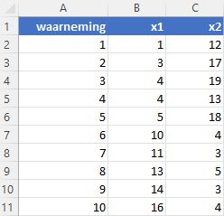
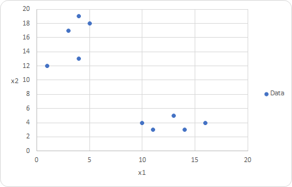
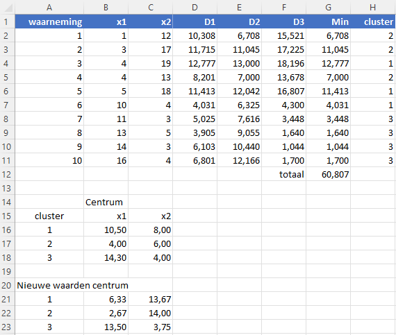
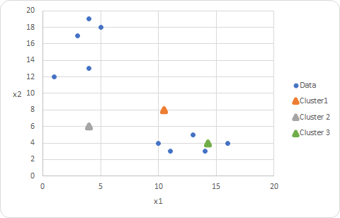
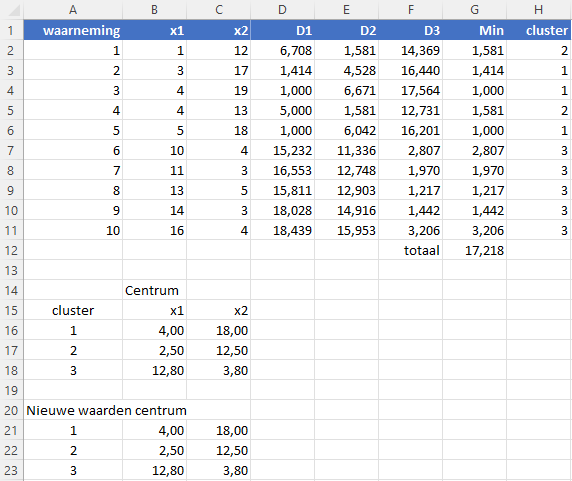
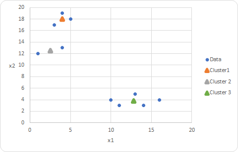
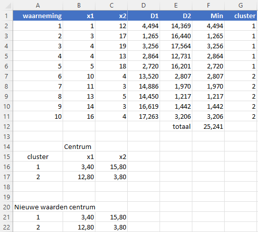
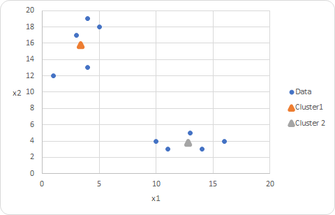
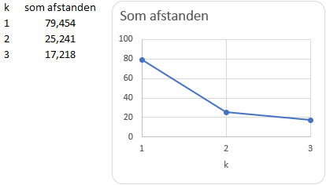

K-Means uitleg
Uitleg van het K-Means algoritme voor Machine Learning aan de hand van een klein voorbeeld in Excel.
K-Means (vertaald: k-gemiddeld) is een veel gebruikt algoritme voor ongecontroleerd (niet-bewaakt) machinaal leren. Om te leren hoe dit algoritme werkt zal een eenvoudig voorbeeld in Excel worden uitgewerkt.
Principe
Het doel van clustering is om waarnemingen in een dataset te groeperen in clusters die vergelijkbare kenmerken hebben. De techniek wordt bijvoorbeeld veel gebruikt bij klantsegmentatie. De \(k\) is het aantal clusters.
Bij k-means wordt elke cluster gekenmerkt door een centrum (zwaartepunt) en wordt een waarneming ondergebracht in de dichtsbijzijnde cluster, dus de cluster met de kortste afstand naar het centrum ervan.
Er bestaan verschillende manieren om de afstand te bepalen. De meest gebruikte is de Euclidische afstand (ook wel Pythagoras afstand genoemd) welke ook in het voorbeeld gebruikt gaat worden.
Heb je twee punten met de coördinaten \((x_1, y_1)\) en \((x_2, y_2)\) dan is de Euclidische afstand uit te rekenen via de bekende Stelling van Pythagoras.
\[\text{afstand = } \sqrt{(x_1 - x_2)^2 + (y_1 - y_2)^2}\]
Het algoritme (van Lloyd) werkt als volgt.
Begonnen wordt met het willekeurig kiezen van het centrum voor elke cluster.
Daarna wordt voor elke waarneming de afstand tot het centrum van elke cluster bepaald.
Elke waarneming wordt nu ingedeeld bij het cluster met de kortste afstand tot het centrum.
Voor elke cluster wordt een nieuw centrum bepaald op basis van de gemiddelde waarden van alle waarnemingen binnen dat cluster.
De stappen 2 t/m 5 worden herhaald tot een bepaalde nauwkeurigheid bereikt is.
Dit principe wordt in Excel gedemonstreerd met een kleine, eenvoudige dataset.
Excel model
Het te downloaden bestand kmeans.xlsx bevat een werkblad data met 10 waarnemingen van twee variabelen x1 en x2, zie Figuur 1.
In de praktijk stellen de variabelen natuurlijk iets voor. Zo zou je van 10 personen de gemiddelde uitgaven voor voedsel (x1) en voor kleding (x2) kunnen bijhouden. Voor de interpretatie van de clustering is deze betekenis van belang.

Wanneer je de waarnemingen uitzet in een spreidingsdiagram, zie Figuur 2, dan kun je visueel de waarnemingen al in 2 clusters indelen, een groep linksboven en een groep rechtsonder.

Eventueel zou je linksboven zelfs twee groepen kunnen voorstellen, waardoor het totaal aantal clusters 3 wordt.
Voor de implementatie van k-means zal eerst met een model met 3 clusters opgezet worden en daarna een model met 2 clusters. Vervolgens zal een methode besproken worden om de beste keuze te maken.
Model met 3 clusters (k=3)
Om de oorspronkelijke dataset intact te houden wordt een kopie van het werkblad data gemaakt en hernoemd als model-k3.
In Figuur 3 zie je het gemaakte k-means model.

In de cellen B16:B18 zie je de willekeurig gekozen waarden voor het centrum van de drie clusters.
Om inzichtelijk te maken waar elk centrum ligt ten opzichte van de waarnemingen zijn deze ook aan het spreidingsdiagram toegevoegd, zie Figuur 4. Wanneer je naar het spreidingsdiagram kijkt, dan zijn er betere beginwaarden te kiezen.

De kolom met de naam D1 bevat de afstand van elke waarneming tot het centrum van cluster 1, kolom D2 de afstand tot het centrum van cluster 2 en kolom D3 de afstand tot het centrum van cluster 3.
De formule in cel D2 is `=WORTEL(($B2-$B$16)^2+($C2-$C$16)^2)`. Deze kun je daarna naar rechts en naar beneden kopieren zodat het bereik D2:F11 met de berekende afstanden gevuld wordt.
De kolom met de naam Min bevat de kortste afstand. De formule in cel G2 is `=MIN(D2:F2)` welke je weer naar beneden tot G11 kunt kopieren. In cel G12 wordt het totaal van deze kortste afstanden berekend.
In de kolom met de naam cluster wordt vervolgens vastgesteld in welke cluster de waarneming moet vallen. In cel G2 staat hiervoor de formule `=VERGELIJKEN(G2;D2:F2;0)` welke je weer naar beneden kunt kopieren.
Nu voor elke cluster bekend is welke waarnemingen tot de cluster behoren, kan voor elke cluster het nieuwe centrum berekend worden. Hiervoor worden de gemiddeldes van x1 en x2 berekend voor de waarnemingen binnen elke cluster. Dat is gebeurd in de cellen B21:C23. Zo is de formule in cel B21 =GEMIDDELDE.ALS($H$2:$H$11;$A21;B$2:B$11). Ook deze kun je weer kopieren.
Nu kan het iteratieproces beginnen. Kopieer de nieuwe centrumwaarden naar B16:B18.
Let er op dat je de waarden kopieert (via Plakken Speciaal) en niet de formules.
Er worden nu weer nieuwe centrumwaarden berekend en ook neemt de som van de minimum afstanden af. In de grafiek kun je ook zien dat de drie centra verschuiven in de richting van de cluster. Herhaal dit proces totdat er nauwelijks meer wijzigingen optreden. Dat is bij dit voorbeeld na de 4e iteratiestap. In Figuur 5 zie je de gevonden waarden voor de drie centra en de clusterindeling voor de waarnemingen.

En in Figuur 6 kun je de lokaties van de clusters waarnemen die waarschijnlijk wel overeenkomen met de eerste gedachte.

Model met 2 clusters (k=2)
Het handigste om een model met 2 clusters te maken is door te beginnen met het maken van een kopie van werkblad model-k3 en deze te hernoemen naar model-k2. Vervolgens verwijder je de kolom D3 en de rijen voor cluster 3.
Je kunt ook nu weer starten met willekeurig gekozen beginwaarden voor de clustercentra, maar om te laten zien dat de iteratie wat sneller verloopt wanneer de beginwaarden gunstiger zijn worden de volgende beginwaarden gebruikt:
Centrum cluster 1 = (5,15) en Centrum cluster 2 = (15, 5)
Al na de tweede iteratiestap treden geen wijzigingen meer op. De eindresultaten zijn te zien in Figuur 7 en Figuur 8.


De beste waarde voor k
Een veelgebruikte methode om de beste waarde voor k te bepalen is de zogenaamde elleboogmethode. Hierbij wordt gekeken hoe de som van de minimale afstanden verandert voor verschillende waarden van \(k\).
Voor k=2 en k=3 is deze reeds in het werkblad berekend. Voor het geval k=1 is het triviaal. het centrum is in dat geval het gemiddelde van de waarden voor x1 en x2. je moet dan alleen nog de som van de afstanden tot dit centrum berekenen.
Daarna kun je de som van de minimumafstanden uitzetten tegen de waarden van k.

In Figuur 9 is te zien dat de totale afstand flink afneemt van k=1 naar k=2 en dat de afname klein is van k=2 naar k=3. De elleboogmethode bestaat uit het vinden van de waarde van k, van waaruit de afname van de totale afstand marginaal wordt. Je zou dus kunnen concluderen dat k=3 niet nodig is.
Van belang bij deze afweging is ook wat de variabelen in werkelijkheid voorstellen. Zou x1 de gemiddelde uitgaven voor voedsel voorstellen en x2 die voor kleding, dan heb je bij k=2 een cluster 1 die veel uitgeeft aan voedsel en weinig aan kleding en een cluster 2 bij wie dat precies andersom is. Maar bij k=3 wordt cluster 1 verder opgesplitst en het is maar de vraag of je de verschillen zinvol kunt duiden.
Slotopmerkingen
In voorgaande uitwerking in Excel heb je de iteratie handmatig uitgevoerd door steeds betere centrumwaarden te bepalen en deze weer in het model te gebruiken. In plaats daarvan zou je ook gebruik kunnen maken van de Oplosser, een met Excel meegeleverde invoegtoepassing. In dat geval is de te minimaliseren doelfunctie de cel met de som van de minimale afstanden en zijn de centrumwaarden de variabele cellen.
Het uitgewerkte voorbeeld was een zeer kleine dataset waarmee het principe van het k-means algoritme goed in Excel uitgelegd kon worden. Voor grotere datasets en meerdere variabelen is Excel niet het geschikte gereedschap en zul je over moeten stappen naar bijvoorbeeld R of Python. Voor beide zijn veel artikelen en tutorials met voorbeelden te vinden.
In plaats van de uitwerkingen in Excel zelf te maken kun je ook een bestand met het eindresulttaat downloaden via kmeans-resultaat.xlsx.